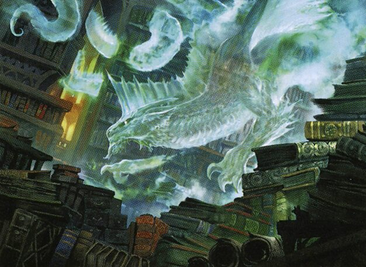
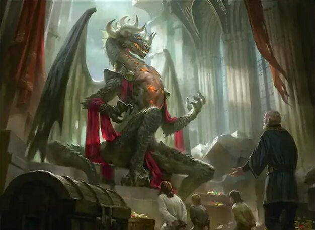
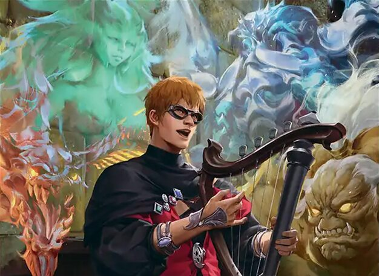
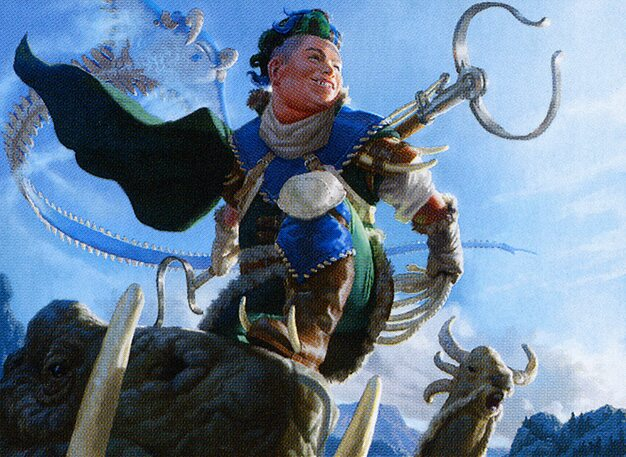

Welche Commander gewinnen mit deinem Budget am häufigsten?
64 beliebte Commander, je Preisklasse (100 €, 200 €, 300 €, 400 €, 500 €, 1.000 € und 1.500 €) mit einem Budget-Deck gebaut und laufend in Forge gegeneinander getestet. Zu jedem Deck: Kartenliste, Statistik aus den Partien und Kaufliste für Cardmarket.
- 30.949 Partien
- 198 Turniere
- 448 getestete Decks
Letztes Turnier: . Nach jedem Turnier wird die Seite automatisch aktualisiert.
Zur Rangliste Eigenes Deck testen8 kostenlose Plätze frei
Rangliste
Die erfolgreichsten Decks bis 100 € in der Forge-Simulation (Bracket 3: höchstens 3 Game Changer).
 Illustration: Eric Deschamps · © Wizards of the Coast
Illustration: Eric Deschamps · © Wizards of the CoastOloro, Ageless Ascetic
 Illustration: Magali Villeneuve · © Wizards of the Coast
Illustration: Magali Villeneuve · © Wizards of the CoastY'shtola, Night's Blessed
 Illustration: Valera Lutfullina · © Wizards of the Coast
Illustration: Valera Lutfullina · © Wizards of the CoastUreni of the Unwritten
Rangliste bis 100 €
aus 47 Turnieren| # | Commander | Elo | Form | Stufe | Partien | Preis |
|---|---|---|---|---|---|---|
| 1 | | 1740▲25 | 3221111421 | S | 470 (4) | 97,09 € |
| 2 | | 1711▲11 | 4112323114 | S | 471 (6) | 88,43 € |
| 3 | | 1710▼25 | 2444441231 | S | 470 (2) | 98,79 € |
| 4 |  | 1693▼21 | 1244332223 | S | 471 (12) | 99,89 € |
| 5 |  | 1687▼10 | 1323324213 | S | 471 (9) | 98,62 € |
| 6 |  | 1684▲41 | 4111121341 | S | 471 (10) | 99,76 € |
| 7 |  | 1682▲25 | 4213223111 | A | 472 (4) | 96,39 € |
| 8 |  | 1678▼20 | 3432134134 | A | 471 (3) | 96,73 € |
| 9 |  | 1676▲4 | 2414212331 | A | 470 (1) | 95,31 € |
| 10 |  | 1661▲41 | 1331113221 | A | 471 (13) | 99,97 € |
| 11 |  | 1636▼5 | 1143441442 | A | 472 (6) | 98,59 € |
| 12 |  | 1625▼7 | 2231243242 | A | 471 (2) | 97,62 € |
| 13 |  | 1614▼5 | 4113332333 | A | 471 (10) | 98,06 € |
| 14 |  | 1611▲18 | 1414411224 | A | 470 (9) | 98,29 € |
| 15 |  | 1610±0 | 1324434311 | A | 471 (13) | 99,98 € |
| 16 |  | 1598▼41 | 3343434242 | A | 470 (15) | 99,83 € |
| 17 |  | 1595▼8 | 3222144143 | A | 471 (16) | 96,92 € |
| 18 |  | 1581▼16 | 2443213441 | A | 470 (9) | 95,51 € |
| 19 |  | 1580▼2 | 3131333224 | A | 470 (23) | 96,40 € |
| 20 |  | 1580±0 | 4122231324 | A | 470 (14) | 97,94 € |
| 21 |  | 1559▼30 | 2324344413 | B | 472 (13) | 95,14 € |
| 22 |  | 1550▲27 | 1131441123 | B | 472 (17) | 95,40 € |
| 23 |  | 1537▲25 | 4411241132 | B | 471 (12) | 99,89 € |
| 24 |  | 1534▼5 | 2332222341 | B | 470 (16) | 99,94 € |
| 25 |  | 1533▲43 | 1113414411 | B | 470 (15) | 98,75 € |
| 26 |  | 1531▼6 | 3421214422 | B | 470 (42) | 99,05 € |
| 27 |  | 1529▲6 | 3221412333 | B | 471 (11) | 99,97 € |
| 28 |  | 1519▼46 | 3233443442 | B | 472 (11) | 96,42 € |
| 29 |  | 1518±0 | 1314221334 | B | 471 (9) | 99,70 € |
| 30 |  | 1513±0 | 4422122133 | B | 472 (13) | 97,42 € |
| 31 |  | 1498▼10 | 4142312224 | B | 470 (17) | 99,80 € |
| 32 |  | 1495▲1 | 1223334132 | B | 471 (25) | 99,06 € |
| 33 |  | 1487▼19 | 4344144411 | B | 241 | 97,86 € |
| 34 |  | 1486▼7 | 1232423223 | B | 470 (32) | 99,39 € |
| 35 |  | 1485▲14 | 2422144211 | B | 471 (5) | 96,88 € |
| 36 |  | 1483▼9 | 3341332144 | B | 472 (24) | 89,99 € |
| 37 |  | 1482▲10 | 3141212324 | B | 472 (9) | 97,80 € |
| 38 |  | 1472▲4 | 2314112334 | B | 470 (15) | 94,27 € |
| 39 |  | 1465▼2 | 3413331313 | B | 470 (18) | 98,92 € |
| 40 |  | 1464±0 | 4414423112 | B | 471 (15) | 97,29 € |
| 41 |  | 1443▲3 | 2222142233 | B | 472 (25) | 93,03 € |
| 42 |  | 1441▲31 | 1121423114 | B | 152 | 95,53 € |
| 43 |  | 1440▼13 | 2443121433 | B | 470 (14) | 98,26 € |
| 44 |  | 1434▲1 | 3321223231 | B | 471 (18) | 98,39 € |
| 45 |  | 1428▼33 | 4433343314 | C | 471 (15) | 99,58 € |
| 46 |  | 1419▼15 | 2244134222 | C | 470 (23) | 94,65 € |
| 47 |  | 1411▲13 | 1141431232 | C | 471 (34) | 92,92 € |
| 48 |  | 1408▲4 | 3234341411 | C | 471 (13) | 100,00 € |
| 49 |  | 1392▲12 | 3134213221 | C | 472 (13) | 99,98 € |
| 50 |  | 1385▼4 | 3441234411 | C | 472 (26) | 99,29 € |
| 51 |  | 1377▼22 | 3134414422 | C | 473 (13) | 99,91 € |
| 52 |  | 1374▲14 | 2134114242 | C | 472 (33) | 99,08 € |
| 53 |  | 1360▲7 | 3112414233 | C | 473 (23) | 97,76 € |
| 54 |  | 1341▼10 | 2323411443 | C | 471 (21) | 98,97 € |
| 55 |  | 1339▲11 | 4342211242 | C | 472 (25) | 98,72 € |
| 56 | 1330▼17 | 2324324241 | C | 70 | 99,99 € | |
| 57 |  | 1312▲9 | 4212241242 | C | 471 (34) | 97,45 € |
| 58 |  | 1301▼6 | 4232333132 | C | 470 (44) | 98,86 € |
| 59 |  | 1293▼45 | 4433424344 | D | 473 (33) | 99,98 € |
| 60 |  | 1271▲9 | 2212431333 | D | 472 (16) | 98,37 € |
| 61 |  | 1268▼1 | 2423322124 | D | 472 (37) | 97,85 € |
| 62 |  | 1234▲9 | 4241333421 | D | 473 (21) | 99,97 € |
| 63 |  | 1233▼14 | 3132233444 | D | 471 (24) | 97,22 € |
| 64 |  | 1220▲31 | 4334121231 | D | 472 (33) | 97,57 € |
- Reign of Dragons – Elo 1632, Siegquote 31 % in 150 Partien, wäre Platz 12
- Doom Prevails – Elo 1573, Siegquote 29 % in 150 Partien, wäre Platz 21
- Avengers Assemble – Elo 1567, Siegquote 25 % in 150 Partien, wäre Platz 21
- Turtle Power! – Elo 1487, Siegquote 25 % in 150 Partien, wäre Platz 33
Nicht mehr im Feld (bei EDHREC aus den Top gefallen, darum nicht in der Rangliste): Gishath, Sun's Avatar (Elo 1684, 318 Partien), Tom Bombadil (Elo 1502, 384 Partien), Arabella, Abandoned Doll (Elo 1466, 216 Partien)
Die erfolgreichsten Decks bis 200 € in der Forge-Simulation (Bracket 3: höchstens 3 Game Changer).
Illustration: Mark Winters · © Wizards of the CoastNekusar, the Mindrazer
Illustration: Kai Carpenter · © Wizards of the CoastGiada, Font of Hope
Illustration: Eric Deschamps · © Wizards of the CoastOloro, Ageless Ascetic
Rangliste bis 200 €
aus 46 Turnieren| # | Commander | Elo | Form | Stufe | Partien | Preis |
|---|---|---|---|---|---|---|
| 1 | | 1769▼4 | 4123413311 | S | 462 (3) | 192,56 € |
| 2 | | 1731▼19 | 3331333133 | S | 461 (11) | 197,17 € |
| 3 | | 1728▲12 | 1114342131 | S | 463 (10) | 191,07 € |
| 4 | | 1726▼8 | 1214423412 | S | 463 (6) | 192,93 € |
| 5 | | 1705▲34 | 1422114112 | S | 460 (7) | 186,71 € |
| 6 | | 1688▲3 | 4232141133 | S | 462 (7) | 191,15 € |
| 7 | | 1683▲9 | 1314242212 | A | 460 (2) | 193,90 € |
| 8 | | 1675▲5 | 3421321231 | A | 460 (11) | 196,62 € |
| 9 | | 1670▲41 | 4131211123 | A | 460 (4) | 197,19 € |
| 10 | | 1658▲23 | 2323111144 | A | 461 (11) | 191,71 € |
| 11 | | 1654▼3 | 4314311243 | A | 460 (10) | 198,36 € |
| 12 | | 1649▼19 | 3233321424 | A | 460 (3) | 191,77 € |
| 13 | | 1642▲1 | 1112434424 | A | 460 (15) | 197,14 € |
| 14 | | 1626▼7 | 3444112322 | A | 461 (11) | 199,04 € |
| 15 | 1626▼30 | 2423414423 | A | 462 (5) | 198,76 € | |
| 16 | | 1592▲9 | 3141114223 | A | 462 (47) | 198,22 € |
| 17 | | 1589▼28 | 3223232334 | A | 461 (7) | 185,91 € |
| 18 | | 1578▼52 | 4342344424 | A | 462 (16) | 177,86 € |
| 19 | | 1574▲2 | 2143232214 | A | 461 (20) | 191,51 € |
| 20 | | 1562▼23 | 2342234414 | B | 460 (13) | 179,08 € |
| 21 | | 1539▼23 | 4443142441 | B | 460 (13) | 191,44 € |
| 22 | | 1534▲30 | 3413113114 | B | 461 (35) | 199,50 € |
| 23 | | 1532▲2 | 1221143444 | B | 461 (18) | 192,42 € |
| 24 | | 1521▲3 | 4234121441 | B | 460 (15) | 199,76 € |
| 25 | 1515▼1 | 1124443143 | B | 461 (10) | 192,22 € | |
| 26 | | 1515▲9 | 4144441=11 | B | 463 (31) | 198,50 € |
| 27 | | 1511▼10 | 4344123=31 | B | 460 (17) | 193,74 € |
| 28 | | 1508▲21 | 2211342212 | B | 461 (18) | 190,41 € |
| 29 | | 1505▼5 | 2322233134 | B | 461 (10) | 185,35 € |
| 30 | | 1497▲17 | 3112322321 | B | 460 (18) | 195,95 € |
| 31 | | 1488▲22 | 1232211233 | B | 461 (20) | 196,51 € |
| 32 | | 1484▲64 | 1132112=11 | B | 461 (28) | 197,40 € |
| 33 | | 1483▲8 | 3113332133 | B | 280 (1) | 194,48 € |
| 34 | | 1478▼26 | 1434434223 | B | 463 (19) | 184,05 € |
| 35 | | 1475▼25 | 2441223343 | B | 462 (18) | 193,20 € |
| 36 | | 1462▲4 | 2233221213 | B | 460 (24) | 189,30 € |
| 37 | | 1460▲5 | 1223441322 | B | 461 (21) | 186,69 € |
| 38 | | 1460▼2 | 4343413=11 | B | 460 (19) | 197,48 € |
| 39 | | 1453▼15 | 3321233433 | B | 460 (21) | 183,93 € |
| 40 | | 1451▲3 | 2224231222 | B | 460 (24) | 187,37 € |
| 41 | | 1431▼35 | 2443431424 | B | 461 (15) | 198,72 € |
| 42 | | 1428▲25 | 4232113111 | B | 460 (16) | 195,21 € |
| 43 | | 1422▼17 | 3324434114 | B | 460 (28) | 185,13 € |
| 44 | | 1419▼40 | 3343314444 | B | 462 (12) | 193,87 € |
| 45 | | 1414▲1 | 3312322132 | C | 462 (22) | 198,45 € |
| 46 | | 1404▲6 | 2214133133 | C | 460 (11) | 196,37 € |
| 47 | | 1402▲1 | 2143123412 | C | 461 (11) | 196,28 € |
| 48 | | 1393▼21 | 4212343223 | C | 461 (22) | 193,50 € |
| 49 | | 1392▼19 | 4114434221 | C | 463 (21) | 195,68 € |
| 50 | | 1391▼16 | 4142222332 | C | 461 (32) | 195,79 € |
| 51 | | 1390▲21 | 1334141141 | C | 462 (14) | 195,91 € |
| 52 | | 1356▲27 | 2313413211 | C | 462 (23) | 198,40 € |
| 53 | | 1345▼16 | 1423224344 | C | 461 (39) | 182,51 € |
| 54 | | 1343▼20 | 2432424142 | C | 461 (35) | 195,32 € |
| 55 | 1340▲27 | 4211313321 | C | 151 (2) | 193,86 € | |
| 56 | | 1320▼4 | 1122432434 | C | 462 (28) | 198,70 € |
| 57 | | 1308▲36 | 2133222311 | C | 461 (48) | 188,82 € |
| 58 | | 1306▲2 | 3231441233 | C | 461 (24) | 196,33 € |
| 59 | | 1294▲5 | 1142443223 | D | 460 (27) | 179,17 € |
| 60 | 1281▼29 | 3444143344 | D | 71 | 200,00 € | |
| 61 | | 1277▲20 | 2113412442 | D | 461 (23) | 187,86 € |
| 62 | 1268▲18 | 1444114322 | D | 461 (40) | 196,86 € | |
| 63 | | 1249▼16 | 3343412444 | D | 460 (29) | 195,43 € |
| 64 | | 1234▼2 | 3222334232 | D | 464 (18) | 196,53 € |
- Reign of Dragons – Elo 1582, Siegquote 25 % in 130 Partien, wäre Platz 18
- Turtle Power! – Elo 1556, Siegquote 29 % in 130 Partien, wäre Platz 21
- Doom Prevails – Elo 1553, Siegquote 25 % in 130 Partien, wäre Platz 21
- Avengers Assemble – Elo 1545, Siegquote 30 % in 130 Partien, wäre Platz 21
Nicht mehr im Feld (bei EDHREC aus den Top gefallen, darum nicht in der Rangliste): Gishath, Sun's Avatar (Elo 1713, 300 Partien), Tom Bombadil (Elo 1565, 360 Partien), Arabella, Abandoned Doll (Elo 1512, 165 Partien)
Die erfolgreichsten Decks bis 300 € in der Forge-Simulation (Bracket 3: höchstens 3 Game Changer).
Illustration: Eric Deschamps · © Wizards of the CoastOloro, Ageless Ascetic
Illustration: Mark Winters · © Wizards of the CoastNekusar, the Mindrazer
Illustration: Valera Lutfullina · © Wizards of the CoastUreni of the Unwritten
Rangliste bis 300 €
aus 25 Turnieren| # | Commander | Elo | Form | Stufe | Partien | Preis |
|---|---|---|---|---|---|---|
| 1 | | 1764▼34 | 1134413444 | S | 253 | 286,54 € |
| 2 | | 1740▲3 | 2143111343 | S | 251 | 277,04 € |
| 3 | | 1737▲11 | 4411341141 | S | 252 | 289,98 € |
| 4 | | 1731▲5 | 4331222131 | S | 250 (1) | 293,58 € |
| 5 | | 1727▲25 | 3311331311 | S | 250 | 289,33 € |
| 6 | | 1697▼40 | 4232424324 | S | 253 | 290,20 € |
| 7 | | 1694▼30 | 2444412223 | A | 250 | 294,39 € |
| 8 | | 1678▲16 | 1142331412 | A | 251 | 290,21 € |
| 9 | | 1672▲20 | 1422131222 | A | 250 | 291,17 € |
| 10 | | 1669▼9 | 3332134214 | A | 250 | 299,90 € |
| 11 | | 1666▲9 | 2231331431 | A | 252 | 295,37 € |
| 12 | | 1656▼22 | 4224212442 | A | 250 (1) | 298,81 € |
| 13 | 1640▼25 | 3122443433 | A | 252 | 293,91 € | |
| 14 | | 1616▲16 | 1243324113 | A | 252 (8) | 295,71 € |
| 15 | | 1604▲2 | 1314243242 | A | 251 | 294,59 € |
| 16 | | 1587▼19 | 4413233144 | A | 250 | 279,67 € |
| 17 | 1583▲22 | 2141121342 | A | 252 | 292,22 € | |
| 18 | | 1581▲29 | 2214213131 | A | 250 | 280,49 € |
| 19 | | 1576▲7 | 3324331131 | A | 251 (3) | 278,46 € |
| 20 | | 1575▲21 | 2142132122 | B | 250 (1) | 291,21 € |
| 21 | | 1563▲5 | 3414213231 | B | 250 (2) | 292,09 € |
| 22 | | 1558▼16 | 4124434331 | B | 250 (3) | 277,17 € |
| 23 | | 1550▼12 | 3432113244 | B | 250 (2) | 299,46 € |
| 24 | | 1546▲14 | 2234124112 | B | 252 | 290,43 € |
| 25 | | 1532▲33 | 2121132421 | B | 251 | 296,32 € |
| 26 | | 1525▼9 | 1413433414 | B | 253 (4) | 285,46 € |
| 27 | | 1524▼3 | 1332214243 | B | 250 (2) | 298,85 € |
| 28 | | 1519▲10 | 4313412123 | B | 250 (4) | 290,37 € |
| 29 | | 1512▼10 | 4233341222 | B | 250 | 278,38 € |
| 30 | | 1505▲2 | 4412214224 | B | 251 (2) | 297,49 € |
| 31 | | 1500▲8 | 13211434=3 | B | 251 | 292,12 € |
| 32 | | 1500±0 | 2322311343 | B | 250 (2) | 292,33 € |
| 33 | | 1491▼5 | 3144214142 | B | 250 (3) | 215,40 € |
| 34 | | 1476▼4 | 3123412233 | B | 250 | 282,03 € |
| 35 | | 1476▼8 | 1242243413 | B | 251 (3) | 294,49 € |
| 36 | | 1472▲2 | 31343311=4 | B | 250 | 293,25 € |
| 37 | | 1468▼7 | 14432423=1 | B | 251 (2) | 290,01 € |
| 38 | | 1467▲3 | 4313323132 | B | 250 | 292,28 € |
| 39 | | 1462▲17 | 211434112= | B | 250 (3) | 247,23 € |
| 40 | | 1455▼7 | 4324223221 | B | 251 | 290,50 € |
| 41 | | 1442▲39 | 11211421== | B | 250 (1) | 289,70 € |
| 42 | | 1440▼25 | 344341241= | B | 252 (1) | 282,95 € |
| 43 | | 1416▲24 | 2312411114 | B | 251 (2) | 290,42 € |
| 44 | | 1407▲17 | 1211442413 | B | 252 (2) | 294,36 € |
| 45 | 1405▼3 | 4214124241 | B | 151 | 284,65 € | |
| 46 | | 1404▼29 | 3331443333 | C | 252 | 285,98 € |
| 47 | | 1403▼37 | 2332443244 | C | 250 (1) | 298,25 € |
| 48 | | 1402±0 | 24113414=2 | C | 252 (1) | 292,88 € |
| 49 | | 1394▼25 | 4241424223 | C | 251 | 293,87 € |
| 50 | | 1392▼6 | 3332312414 | C | 252 (1) | 296,83 € |
| 51 | | 1365▲23 | 2441111232 | C | 250 (1) | 299,80 € |
| 52 | | 1356▼16 | 2434413241 | C | 250 (2) | 292,13 € |
| 53 | 1354▼13 | 3124233314 | C | 71 | 298,53 € | |
| 54 | | 1353▲22 | 414411=1=2 | C | 251 (3) | 298,56 € |
| 55 | | 1352▲17 | 2232=33111 | C | 251 (4) | 283,45 € |
| 56 | | 1313▼13 | 1132334=44 | C | 250 (9) | 292,47 € |
| 57 | | 1296▲19 | 422242211= | C | 251 (2) | 297,22 € |
| 58 | 1276▲1 | 1144223244 | C | 250 (9) | 296,23 € | |
| 59 | | 1262▼26 | 324344432= | D | 250 (6) | 281,46 € |
| 60 | | 1261▲12 | 4422124132 | D | 251 (4) | 297,06 € |
| 61 | | 1260▼10 | 333323=223 | D | 250 (4) | 286,60 € |
| 62 | | 1245▲7 | 1323243223 | D | 250 (3) | 274,55 € |
| 63 | | 1235▼5 | 3423331334 | D | 250 (6) | 289,39 € |
| 64 | | 1234▲5 | 2412334222 | D | 252 (3) | 290,25 € |
- Reign of Dragons – Elo 1578, Siegquote 25 % in 110 Partien, wäre Platz 19
- Doom Prevails – Elo 1552, Siegquote 25 % in 110 Partien, wäre Platz 23
- Turtle Power! – Elo 1502, Siegquote 26 % in 110 Partien, wäre Platz 31
- Avengers Assemble – Elo 1488, Siegquote 26 % in 110 Partien, wäre Platz 34
Nicht mehr im Feld (bei EDHREC aus den Top gefallen, darum nicht in der Rangliste): Gishath, Sun's Avatar (Elo 1765, 101 Partien), Tom Bombadil (Elo 1503, 179 Partien)
Die erfolgreichsten Decks bis 400 € in der Forge-Simulation (Bracket 3: höchstens 3 Game Changer).
Illustration: Eric Deschamps · © Wizards of the CoastOloro, Ageless Ascetic
Illustration: Jaime Jones · © Wizards of the CoastThe Ur-Dragon
Illustration: Sam Burley · © Wizards of the CoastPantlaza, Sun-Favored
Rangliste bis 400 €
aus 21 Turnieren| # | Commander | Elo | Form | Stufe | Partien | Preis |
|---|---|---|---|---|---|---|
| 1 | | 1786▲34 | 1411123111 | S | 210 | 389,13 € |
| 2 | | 1735▲47 | 1412112111 | S | 210 (1) | 399,96 € |
| 3 | | 1723▲19 | 3141141123 | S | 211 (1) | 391,27 € |
| 4 | | 1701▼36 | 2334334412 | S | 211 | 396,49 € |
| 5 | | 1696▼31 | 2243442134 | S | 211 | 394,10 € |
| 6 | | 1695▲1 | 3111441344 | S | 210 | 368,57 € |
| 7 | | 1689▼7 | 4332321142 | A | 210 (1) | 388,09 € |
| 8 | | 1678▲3 | 2412312144 | A | 211 | 391,23 € |
| 9 | | 1668▼34 | 1343233443 | A | 210 | 388,60 € |
| 10 | | 1666▼25 | 2222442422 | A | 211 (7) | 397,83 € |
| 11 | | 1656▼11 | 1334422232 | A | 210 | 387,68 € |
| 12 | | 1652▼8 | 4144313313 | A | 211 (1) | 394,19 € |
| 13 | | 1650▲57 | 3121113211 | A | 210 | 393,18 € |
| 14 | 1631▲2 | 4124124431 | A | 211 | 396,51 € | |
| 15 | | 1631▲19 | 2311243213 | A | 210 (1) | 388,06 € |
| 16 | | 1618▲5 | 4113231343 | A | 210 (1) | 390,90 € |
| 17 | | 1613▲9 | 3322241321 | A | 211 (1) | 396,08 € |
| 18 | | 1606▲8 | 1121332434 | A | 210 | 383,10 € |
| 19 | | 1575▲2 | 1443324113 | A | 210 (2) | 346,62 € |
| 20 | | 1572▼8 | 3221224442 | B | 211 | 389,46 € |
| 21 | | 1560▲27 | 1112214144 | B | 211 (2) | 398,50 € |
| 22 | | 1557▼32 | 4413343424 | B | 212 (3) | 397,46 € |
| 23 | | 1553▲90 | 1211111211 | B | 211 (3) | 396,38 € |
| 24 | | 1550▼15 | 2241444231 | B | 211 (1) | 390,45 € |
| 25 | | 1544▼33 | 4224234333 | B | 210 | 352,34 € |
| 26 | | 1543▼22 | 3333331243 | B | 210 (4) | 395,73 € |
| 27 | | 1523▼22 | 4434222133 | B | 211 (3) | 394,26 € |
| 28 | | 1513▲37 | 1121143321 | B | 212 (3) | 380,56 € |
| 29 | | 1510▼10 | 2343133441 | B | 210 (1) | 393,67 € |
| 30 | | 1509▼39 | 4344232324 | B | 210 (1) | 381,18 € |
| 31 | 1495▼21 | 1434223433 | B | 210 (1) | 396,59 € | |
| 32 | | 1490▼5 | 4223133341 | B | 210 (1) | 371,12 € |
| 33 | | 1484▲29 | 1112432214 | B | 210 (2) | 371,55 € |
| 34 | | 1481▼23 | 4421334414 | B | 213 (1) | 387,59 € |
| 35 | | 1480▼4 | 2332423122 | B | 212 (4) | 387,40 € |
| 36 | | 1473▲15 | 2212332411 | B | 210 (2) | 397,91 € |
| 37 | | 1467▼5 | 2424133313 | B | 212 (1) | 385,70 € |
| 38 | | 1462±0 | 1333221224 | B | 212 (3) | 247,23 € |
| 39 | | 1449▲2 | 3324211242 | B | 210 (2) | 382,42 € |
| 40 | | 1448▼38 | 4423444414 | B | 211 (3) | 208,36 € |
| 41 | | 1432▲19 | 1324411212 | B | 210 (3) | 382,73 € |
| 42 | | 1428▲18 | 3241411124 | B | 211 (1) | 383,33 € |
| 43 | | 1422▲11 | 3241212241 | B | 211 | 397,49 € |
| 44 | | 1416▲48 | 1111411222 | B | 210 | 394,87 € |
| 45 | | 1414±0 | 3314313233 | B | 211 (2) | 343,90 € |
| 46 | | 1412▼23 | 2223344314 | C | 210 (2) | 390,57 € |
| 47 | 1406▲10 | 2141232133 | C | 130 (2) | 398,68 € | |
| 48 | | 1404▲8 | 1334412141 | C | 211 (2) | 379,52 € |
| 49 | | 1403▼21 | 3434143312 | C | 211 (2) | 368,86 € |
| 50 | | 1389▲8 | 2123211424 | C | 210 | 399,55 € |
| 51 | | 1382▼14 | 3224332312 | C | 211 (1) | 371,79 € |
| 52 | | 1379▼2 | 1432134221 | C | 210 | 392,82 € |
| 53 | | 1366▼9 | 2122414333 | C | 210 (1) | 391,85 € |
| 54 | 1349▼24 | 4423124332 | C | 70 | 399,30 € | |
| 55 | | 1347▲19 | 4313121413 | C | 211 (4) | 389,80 € |
| 56 | | 1303▲3 | 4122423124 | C | 211 (4) | 393,70 € |
| 57 | | 1300▼12 | 1423442144 | C | 211 (4) | 384,40 € |
| 58 | | 1296▼34 | 3442433343 | C | 210 (2) | 389,14 € |
| 59 | | 1288±0 | 3242241222 | D | 211 (6) | 383,95 € |
| 60 | | 1282▲17 | 2434211341 | D | 211 (2) | 389,27 € |
| 61 | 1281▲9 | 2133332313 | D | 211 (4) | 392,20 € | |
| 62 | | 1231▲4 | 4143222234 | D | 211 (2) | 399,19 € |
| 63 | | 1227±0 | 3312344422 | D | 210 (3) | 383,09 € |
| 64 | | 1226▼1 | 4341314433 | D | 210 (6) | 373,76 € |
- Doom Prevails – Elo 1560, Siegquote 22 % in 110 Partien, wäre Platz 21
- Reign of Dragons – Elo 1552, Siegquote 25 % in 110 Partien, wäre Platz 24
- Turtle Power! – Elo 1527, Siegquote 32 % in 110 Partien, wäre Platz 27
- Avengers Assemble – Elo 1438, Siegquote 27 % in 110 Partien, wäre Platz 41
Nicht mehr im Feld (bei EDHREC aus den Top gefallen, darum nicht in der Rangliste): Gishath, Sun's Avatar (Elo 1720, 80 Partien), Tom Bombadil (Elo 1496, 138 Partien)
Die erfolgreichsten Decks bis 500 € in der Forge-Simulation (Bracket 3: höchstens 3 Game Changer).
Illustration: Eric Deschamps · © Wizards of the CoastOloro, Ageless Ascetic
Illustration: Valera Lutfullina · © Wizards of the CoastUreni of the Unwritten
Illustration: Chris Cold · © Wizards of the CoastValgavoth, Harrower of Souls
Rangliste bis 500 €
aus 38 Turnieren| # | Commander | Elo | Form | Stufe | Partien | Preis |
|---|---|---|---|---|---|---|
| 1 | | 1839▼21 | 4224141411 | S | 380 (11) | 475,76 € |
| 2 | | 1762▲15 | 21=1321133 | S | 380 (25) | 479,32 € |
| 3 | | 1722▼12 | 4344132141 | S | 380 (6) | 491,47 € |
| 4 | | 1718▲10 | 12=2322312 | S | 380 (26) | 488,75 € |
| 5 | | 1716▼7 | 4133122224 | S | 380 (27) | 479,87 € |
| 6 | | 1712▼39 | 4334431243 | S | 380 (25) | 482,80 € |
| 7 | | 1711▲10 | 3312412221 | S | 380 (16) | 485,83 € |
| 8 | | 1693▲32 | 4113411212 | A | 380 (9) | 492,44 € |
| 9 | | 1691▲19 | 1212243141 | A | 380 (42) | 479,44 € |
| 10 | | 1683▲23 | 1211123424 | A | 380 (28) | 483,30 € |
| 11 | | 1657▼44 | 3444244314 | A | 380 (9) | 454,11 € |
| 12 | | 1655▼2 | 3423132421 | A | 380 (29) | 429,92 € |
| 13 | 1646▼29 | 33=4314333 | A | 380 (26) | 494,43 € | |
| 14 | | 1642▲12 | 1441212423 | A | 380 (81) | 486,85 € |
| 15 | | 1629▲47 | 2112113331 | A | 380 (28) | 493,34 € |
| 16 | | 1604▲13 | 2241241413 | A | 380 (24) | 413,75 € |
| 17 | | 1591▲10 | 12=4214414 | A | 380 (38) | 346,62 € |
| 18 | | 1590▲12 | 2414142231 | A | 380 (53) | 480,18 € |
| 19 | | 1585▼26 | 4132333444 | A | 380 (27) | 495,30 € |
| 20 | | 1573▲9 | 2312431143 | A | 380 (30) | 470,46 € |
| 21 | | 1559▲31 | 1411324113 | B | 380 (33) | 497,27 € |
| 22 | | 1551▼5 | 1133434144 | B | 120 | 183,11 € |
| 23 | | 1548▲12 | 1122331234 | B | 380 (50) | 459,89 € |
| 24 | | 1530▲11 | 2224123212 | B | 380 (53) | 492,00 € |
| 25 | | 1529▲26 | 4133141212 | B | 380 (41) | 499,92 € |
| 26 | | 1519▼4 | 2413314222 | B | 380 (44) | 498,04 € |
| 27 | | 1517▲14 | 4211431432 | B | 380 (54) | 334,55 € |
| 28 | | 1513▼27 | 4344122234 | B | 380 (35) | 349,36 € |
| 29 | | 1513▼9 | 2343222122 | B | 380 (54) | 499,89 € |
| 30 | 1496▲2 | 3144123133 | B | 380 (26) | 493,09 € | |
| 31 | | 1489▼49 | 3332434443 | B | 380 (49) | 480,47 € |
| 32 | | 1488▲12 | 2221123342 | B | 380 (52) | 247,23 € |
| 33 | | 1483▲16 | 1123413142 | B | 380 (46) | 463,31 € |
| 34 | | 1482▼7 | 2412231442 | B | 380 (41) | 481,98 € |
| 35 | | 1481▲1 | 1241342323 | B | 380 (56) | 412,17 € |
| 36 | | 1474▼19 | 2312443342 | B | 380 (53) | 492,34 € |
| 37 | | 1471▼25 | 4342323331 | B | 380 (47) | 489,71 € |
| 38 | | 1463▲4 | 1143134323 | B | 380 (51) | 438,92 € |
| 39 | | 1455▲18 | 1334131421 | B | 380 (51) | 481,06 € |
| 40 | | 1450▼2 | 4222231144 | B | 380 (52) | 478,26 € |
| 41 | | 1438▲21 | 1441142114 | B | 380 (48) | 473,27 € |
| 42 | | 1438▼18 | 4212334332 | B | 380 (19) | 476,60 € |
| 43 | | 1424▼4 | 3131424323 | B | 380 (43) | 350,45 € |
| 44 | 1424▲16 | 3413214141 | B | 120 | 488,79 € | |
| 45 | | 1417▼8 | 3231424214 | C | 380 (54) | 490,04 € |
| 46 | | 1411▲28 | 1124143131 | C | 380 (39) | 499,72 € |
| 47 | | 1408▲13 | 4431114141 | C | 380 (49) | 343,90 € |
| 48 | | 1390▲25 | 1314121432 | C | 380 (46) | 493,74 € |
| 49 | | 1367▼4 | 1244324131 | C | 380 (26) | 486,12 € |
| 50 | | 1352▼9 | 3321314334 | C | 380 (73) | 418,56 € |
| 51 | | 1347▼31 | 4434412243 | C | 380 (44) | 493,73 € |
| 52 | | 1340▼32 | 3412433343 | C | 380 (47) | 415,34 € |
| 53 | | 1329▲16 | 2143211234 | C | 380 (34) | 485,40 € |
| 54 | 1327▲20 | 2121242132 | C | 80 | 499,67 € | |
| 55 | | 1326▲1 | 3213244141 | C | 380 (55) | 485,71 € |
| 56 | | 1325▲15 | 4224213211 | C | 380 (77) | 479,89 € |
| 57 | | 1307▲17 | 2231141422 | C | 380 (39) | 486,06 € |
| 58 | | 1301▼2 | 2422332132 | C | 380 (61) | 480,47 € |
| 59 | | 1281▲17 | 1332312413 | D | 380 (76) | 482,94 € |
| 60 | | 1277▼15 | 2333324222 | D | 380 (62) | 496,71 € |
| 61 | | 1272▼7 | 3421444123 | D | 380 (96) | 484,82 € |
| 62 | | 1230▼15 | 4344422341 | D | 380 (58) | 494,38 € |
| 63 | 1227▼26 | 3424234234 | D | 380 (86) | 499,47 € | |
| 64 | | 1217▼17 | 4133323444 | D | 380 (85) | 474,10 € |
- Doom Prevails – Elo 1563, Siegquote 27 % in 120 Partien, wäre Platz 21
- Reign of Dragons – Elo 1554, Siegquote 27 % in 120 Partien, wäre Platz 22
- Turtle Power! – Elo 1515, Siegquote 22 % in 120 Partien, wäre Platz 28
- Avengers Assemble – Elo 1500, Siegquote 24 % in 120 Partien, wäre Platz 30
Nicht mehr im Feld (bei EDHREC aus den Top gefallen, darum nicht in der Rangliste): Gishath, Sun's Avatar (Elo 1694, 227 Partien), Arabella, Abandoned Doll (Elo 1503, 220 Partien), Tom Bombadil (Elo 1476, 242 Partien)
Die erfolgreichsten Decks bis 1.000 € in der Forge-Simulation (Bracket 3: höchstens 3 Game Changer).
Illustration: Eric Deschamps · © Wizards of the CoastOloro, Ageless Ascetic
Illustration: Mark Winters · © Wizards of the CoastNekusar, the Mindrazer
Illustration: Justyna Dura · © Wizards of the CoastKaalia of the Vast
Rangliste bis 1.000 €
aus 9 Turnieren| # | Commander | Elo | Form | Stufe | Partien | Preis |
|---|---|---|---|---|---|---|
| 1 | | 1742▲52 | 1111211112 | S | 90 | 874,62 € |
| 2 | | 1665▼23 | 1221433343 | S | 90 | 986,97 € |
| 3 | | 1659▲3 | 1343414112 | S | 90 | 960,01 € |
| 4 | | 1649▲18 | 2412241121 | S | 90 | 558,08 € |
| 5 | | 1624▼13 | 3444232113 | S | 90 | 958,64 € |
| 6 | | 1623▼4 | 4133212233 | S | 90 | 990,91 € |
| 7 | | 1610▲12 | 2431141341 | S | 90 | 797,28 € |
| 8 | | 1596▲38 | 4311312221 | A | 90 | 874,79 € |
| 9 | | 1592▲16 | 4122112414 | A | 90 | 742,88 € |
| 10 | | 1589▲4 | 3134141413 | A | 90 | 843,71 € |
| 11 | | 1585▼32 | 2223344432 | A | 90 | 433,23 € |
| 12 | | 1581▲17 | 3213213213 | A | 90 (1) | 847,12 € |
| 13 | | 1574▼6 | 2144323124 | A | 90 | 853,24 € |
| 14 | 1570▼14 | 4342143143 | A | 90 | 999,42 € | |
| 15 | | 1566▼4 | 1232433214 | A | 90 | 975,91 € |
| 16 | | 1558▲13 | 3132124223 | A | 90 | 852,36 € |
| 17 | | 1556▲1 | 2113332244 | A | 90 | 985,59 € |
| 18 | | 1550▼3 | 1412414234 | A | 90 | 613,85 € |
| 19 | | 1547▲15 | 2314421132 | A | 90 | 413,11 € |
| 20 | | 1545▼11 | 3241342314 | A | 90 | 969,53 € |
| 21 | | 1536▲3 | 1433214214 | B | 90 | 574,96 € |
| 22 | | 1519▼4 | 2134212233 | B | 90 | 963,43 € |
| 23 | | 1517▼21 | 3442412224 | B | 90 | 823,24 € |
| 24 | | 1515▲36 | 1124321114 | B | 90 | 954,86 € |
| 25 | | 1514▼28 | 4223334232 | B | 90 | 915,01 € |
| 26 | | 1513▲7 | 1313332341 | B | 90 | 352,34 € |
| 27 | 1510▼19 | 4221423324 | B | 90 | 871,00 € | |
| 28 | | 1507▲38 | 2111333211 | B | 90 | 986,55 € |
| 29 | | 1503▼17 | 3344232331 | B | 90 | 999,66 € |
| 30 | | 1502▲22 | 2311212242 | B | 90 | 708,47 € |
| 31 | | 1500▼23 | 1434144334 | B | 90 | 697,63 € |
| 32 | | 1497▼10 | 3442143142 | B | 90 | 355,88 € |
| 33 | | 1496▲29 | 2231324111 | B | 90 | 998,29 € |
| 34 | | 1495▲29 | 1232111443 | B | 90 | 998,32 € |
| 35 | | 1491▲15 | 1423114142 | B | 90 (2) | 989,27 € |
| 36 | | 1491▼11 | 4334243211 | B | 90 | 681,04 € |
| 37 | | 1469▼10 | 2442222412 | B | 90 | 537,15 € |
| 38 | | 1469▼39 | 3332344234 | B | 90 | 911,40 € |
| 39 | | 1468▼3 | 3222213423 | B | 90 | 216,14 € |
| 40 | | 1467▲8 | 3114423214 | B | 90 | 978,07 € |
| 41 | | 1465▲3 | 1444411413 | B | 90 | 368,86 € |
| 42 | | 1462▼9 | 2342144321 | B | 90 | 340,26 € |
| 43 | | 1458▼14 | 4234213144 | B | 90 | 247,23 € |
| 44 | | 1456▲55 | 1111314122 | B | 90 | 445,54 € |
| 45 | | 1455▲9 | 3421321132 | B | 90 | 934,06 € |
| 46 | 1453▲6 | 3431221313 | C | 90 (1) | 967,88 € | |
| 47 | 1450▲22 | 1113234411 | C | 90 | 975,48 € | |
| 48 | | 1448▼24 | 4321334343 | C | 90 | 765,98 € |
| 49 | | 1444▼17 | 2234432331 | C | 90 | 969,06 € |
| 50 | | 1443▲1 | 3123431234 | C | 90 (1) | 994,00 € |
| 51 | | 1439▼38 | 3421443334 | C | 90 | 908,48 € |
| 52 | | 1435▼1 | 4423121422 | C | 90 | 880,36 € |
| 53 | | 1432▼13 | 3234241412 | C | 90 | 469,30 € |
| 54 | | 1423▼3 | 1431134431 | C | 90 (1) | 981,99 € |
| 55 | | 1418▼3 | 1332321234 | C | 90 | 467,48 € |
| 56 | | 1407▲27 | 1144111423 | C | 90 | 998,47 € |
| 57 | | 1397▼29 | 4434233233 | C | 90 (2) | 998,47 € |
| 58 | | 1373▼5 | 3321144423 | C | 90 (1) | 907,15 € |
| 59 | | 1368▲2 | 4224342221 | D | 90 (1) | 996,83 € |
| 60 | | 1366▲17 | 2314412142 | D | 90 | 999,53 € |
| 61 | 1365▼23 | 2434414224 | D | 90 | 996,73 € | |
| 62 | | 1361▲10 | 2242243131 | D | 90 (1) | 967,89 € |
| 63 | | 1354▼14 | 2414333233 | D | 90 (1) | 964,53 € |
| 64 | | 1318▼3 | 4422214432 | D | 90 | 879,46 € |
- Reign of Dragons – Elo 1578, Siegquote 26 % in 90 Partien, wäre Platz 13
- Avengers Assemble – Elo 1526, Siegquote 26 % in 90 Partien, wäre Platz 22
- Turtle Power! – Elo 1490, Siegquote 21 % in 90 Partien, wäre Platz 37
- Doom Prevails – Elo 1459, Siegquote 27 % in 90 Partien, wäre Platz 43
Die erfolgreichsten Decks bis 1.500 € in der Forge-Simulation (Bracket 3: höchstens 3 Game Changer).
Illustration: Eric Deschamps · © Wizards of the CoastOloro, Ageless Ascetic
Illustration: Kai Carpenter · © Wizards of the CoastGiada, Font of Hope
Illustration: Magali Villeneuve · © Wizards of the CoastY'shtola, Night's Blessed
Rangliste bis 1.500 €
aus 12 Turnieren| # | Commander | Elo | Form | Stufe | Partien | Preis |
|---|---|---|---|---|---|---|
| 1 | | 1721▲6 | 1423211122 | S | 120 | 1.494,28 € |
| 2 | | 1668▲10 | 1214432112 | S | 120 | 556,38 € |
| 3 | | 1666▲4 | 1323411413 | S | 120 | 1.019,05 € |
| 4 | | 1661▲27 | 3121112314 | S | 120 | 433,23 € |
| 5 | | 1650▼13 | 4144234141 | S | 120 | 853,24 € |
| 6 | | 1650▲28 | 3111324131 | S | 120 | 1.348,28 € |
| 7 | | 1643▲15 | 3433142111 | S | 120 | 914,66 € |
| 8 | 1631▲18 | 3311231313 | A | 120 | 1.498,26 € | |
| 9 | | 1611▲5 | 1231124334 | A | 120 | 1.489,86 € |
| 10 | | 1585▲1 | 1411423334 | A | 120 | 1.379,01 € |
| 11 | | 1576▲7 | 4212313331 | A | 120 | 1.474,62 € |
| 12 | | 1573▼7 | 2231422242 | A | 120 | 1.356,75 € |
| 13 | | 1569▲11 | 1333323221 | A | 120 | 556,04 € |
| 14 | | 1568▼19 | 1223421444 | A | 120 | 868,47 € |
| 15 | | 1567▼33 | 4243433323 | A | 120 | 1.177,11 € |
| 16 | | 1566▼6 | 2441312243 | A | 120 | 780,23 € |
| 17 | | 1563▼9 | 3314241243 | A | 120 | 669,95 € |
| 18 | | 1559▼13 | 4143143333 | A | 120 | 352,34 € |
| 19 | | 1549▲14 | 2422242411 | A | 120 | 1.498,00 € |
| 20 | | 1537▲26 | 4141411222 | A | 120 | 881,92 € |
| 21 | | 1532▲4 | 2114431224 | B | 120 | 1.207,29 € |
| 22 | | 1531▼12 | 4122344431 | B | 120 | 1.459,48 € |
| 23 | | 1528▲19 | 3214124211 | B | 120 | 1.250,18 € |
| 24 | | 1525▲20 | 2332113412 | B | 120 | 413,11 € |
| 25 | | 1525▲30 | 3111222222 | B | 120 | 1.499,39 € |
| 26 | | 1516▼5 | 2334431142 | B | 120 | 1.430,38 € |
| 27 | | 1509▲16 | 4223113123 | B | 120 | 574,96 € |
| 28 | | 1502▲23 | 3311431123 | B | 120 | 255,20 € |
| 29 | | 1501▼28 | 4424334331 | B | 120 | 1.015,65 € |
| 30 | | 1497▲25 | 1113141344 | B | 120 | 1.467,23 € |
| 31 | | 1488▼45 | 2433244433 | B | 120 | 1.048,98 € |
| 32 | | 1487▼33 | 3443434311 | B | 120 | 1.495,44 € |
| 33 | | 1486▲8 | 2421244131 | B | 120 (1) | 1.324,08 € |
| 34 | | 1479▲26 | 1321143114 | B | 120 (1) | 934,06 € |
| 35 | | 1477▼8 | 12234=4141 | B | 120 | 682,70 € |
| 36 | | 1476▼22 | 2422342422 | B | 120 | 1.486,98 € |
| 37 | | 1475▲12 | 1333412212 | B | 120 (1) | 1.499,20 € |
| 38 | | 1475▼3 | 4433221124 | B | 120 | 1.472,40 € |
| 39 | | 1471▼15 | 3424132341 | B | 120 | 1.416,43 € |
| 40 | 1466▲23 | 1431211413 | B | 120 | 1.462,30 € | |
| 41 | | 1464▲18 | 1231424411 | B | 120 | 610,45 € |
| 42 | | 1461▼2 | 3311433332 | B | 120 | 215,09 € |
| 43 | 1459▲3 | 1411343124 | B | 120 | 1.406,19 € | |
| 44 | | 1458▼6 | 4412142232 | B | 120 | 370,74 € |
| 45 | | 1456▲18 | 2121422142 | B | 120 | 418,00 € |
| 46 | | 1448▼21 | 2442223431 | C | 120 | 335,93 € |
| 47 | | 1448▲4 | 4232423113 | C | 120 | 350,42 € |
| 48 | | 1447▲11 | 2123331143 | C | 120 | 871,15 € |
| 49 | | 1433▼11 | 1334414341 | C | 120 | 460,34 € |
| 50 | | 1433▲15 | 2121214442 | C | 120 | 1.478,52 € |
| 51 | | 1429▼12 | 4421331333 | C | 120 (1) | 1.041,59 € |
| 52 | | 1422▼9 | 11333=3443 | C | 120 | 408,57 € |
| 53 | | 1417▼34 | 2442=42243 | C | 120 | 689,40 € |
| 54 | 1408▼5 | 3114424314 | C | 120 | 1.261,06 € | |
| 55 | | 1396▼22 | 4324324313 | C | 120 | 1.478,34 € |
| 56 | | 1395▲23 | 3122341122 | C | 120 | 1.409,94 € |
| 57 | | 1384▲21 | 411141=424 | C | 120 | 1.387,98 € |
| 58 | 1377▼10 | 4232134422 | C | 120 | 1.485,43 € | |
| 59 | | 1375▼28 | 4133442343 | D | 120 | 1.476,62 € |
| 60 | | 1374▲13 | 4211222242 | D | 120 | 1.413,82 € |
| 61 | | 1369▼36 | 2443342334 | D | 120 | 1.419,75 € |
| 62 | | 1351±0 | 3323312242 | D | 120 | 1.499,10 € |
| 63 | | 1308▼2 | 3223431424 | D | 120 | 1.420,64 € |
| 64 | | 1307▼11 | 3444423331 | D | 120 | 1.473,94 € |
- Doom Prevails – Elo 1544, Siegquote 26 % in 120 Partien, wäre Platz 20
- Turtle Power! – Elo 1538, Siegquote 22 % in 120 Partien, wäre Platz 20
- Reign of Dragons – Elo 1527, Siegquote 28 % in 120 Partien, wäre Platz 24
- Avengers Assemble – Elo 1498, Siegquote 23 % in 120 Partien, wäre Platz 30
Letztes Turnier:
bis 1.500 €, 68 Decks| # | Commander | Plätze | Siege / Partien | Elo jetzt | Leistung |
|---|---|---|---|---|---|
| 1 | | 3111324131 | 5 / 10 | 1650▲28 | 1,98 |
| 2 | | 3121112314 | 5 / 10 | 1661▲27 | 1,96 |
| 3 | | 1113141344 | 5 / 10 | 1497▲25 | 1,74 |
| 4 | | 1214432112 | 4 / 10 | 1668▲10 | 1,68 |
| 5 | | 3433142111 | 4 / 10 | 1643▲15 | 1,68 |
| 6 | | 1323411413 | 4 / 10 | 1666▲4 | 1,66 |
| 7 | | 1423211122 | 4 / 10 | 1721▲6 | 1,66 |
| 8 | | 1321143114 | 5 / 10 | 1479▲26 | 1,64 |
| 9 | 3311231313 | 4 / 10 | 1631▲18 | 1,61 | |
| 10 | 1431211413 | 5 / 10 | 1466▲23 | 1,59 | |
| 11 | | 4141411222 | 4 / 10 | 1537▲26 | 1,47 |
| 12 | | 3214124211 | 4 / 10 | 1528▲19 | 1,45 |
| 13 | | 3311431123 | 4 / 10 | 1502▲23 | 1,42 |
| 14 | | 1231424411 | 4 / 10 | 1464▲18 | 1,40 |
| 15 | | 4144234141 | 3 / 10 | 1650▼13 | 1,38 |
| 16 | | 1231124334 | 3 / 10 | 1611▲5 | 1,38 |
| 17 | | 411141=424 | 4,2 / 10 | 1384▲21 | 1,33 |
| 18 | | 1411423334 | 3 / 10 | 1585▲1 | 1,33 |
| 19 | 1411343124 | 4 / 10 | 1459▲3 | 1,31 | |
| 20 | | 4212313331 | 3 / 10 | 1576▲7 | 1,24 |
| 21 | | 2121214442 | 3 / 10 | 1433▲15 | 1,17 |
| 22 | | 4223113123 | 3 / 10 | 1509▲16 | 1,17 |
| 23 | | 2332113412 | 3 / 10 | 1525▲20 | 1,17 |
| 24 | | 3111222222 | 3 / 10 | 1525▲30 | 1,17 |
| 25 | | 2421244131 | 3 / 10 | 1486▲8 | 1,15 |
| 26 | | 2114431224 | 3 / 10 | 1532▲4 | 1,14 |
| 27 |  | 3 / 10 | 1,14 | ||
| 28 | | 1333412212 | 3 / 10 | 1475▲12 | 1,12 |
| 29 | | 2121422142 | 3 / 10 | 1456▲18 | 1,11 |
| 30 | | 12234=4141 | 3,2 / 10 | 1477▼8 | 1,09 |
| 31 | | 2123331143 | 3 / 10 | 1447▲11 | 1,06 |
| 32 | | 1334414341 | 3 / 10 | 1433▼11 | 1,06 |
| 33 | | 1333323221 | 2 / 10 | 1569▲11 | 1,03 |
| 34 | | 2422242411 | 2 / 10 | 1549▲14 | 1,03 |
| 35 | 3114424314 | 3 / 10 | 1408▼5 | 1,01 | |
| 36 | | 4143143333 | 2 / 10 | 1559▼13 | 1,00 |
| 37 | | 3122341122 | 3 / 10 | 1395▲23 | 0,98 |
| 38 | | 3314241243 | 2 / 10 | 1563▼9 | 0,98 |
| 39 | | 2441312243 | 2 / 10 | 1566▼6 | 0,96 |
| 40 | | 4122344431 | 2 / 10 | 1531▼12 | 0,94 |
| 41 | | 4433221124 | 2 / 10 | 1475▼3 | 0,93 |
| 42 | | 2334431142 | 2 / 10 | 1516▼5 | 0,93 |
| 43 | | 1223421444 | 2 / 10 | 1568▼19 | 0,92 |
| 44 | | 3311433332 | 2 / 10 | 1461▼2 | 0,91 |
| 45 | | 11333=3443 | 2,2 / 10 | 1422▼9 | 0,89 |
| 46 | | 4412142232 | 2 / 10 | 1458▼6 | 0,89 |
| 47 | | 4232423113 | 2 / 10 | 1448▲4 | 0,89 |
| 48 | | 4421331333 | 2 / 10 | 1429▼12 | 0,84 |
| 49 | | 3424132341 | 2 / 10 | 1471▼15 | 0,83 |
| 50 | | 3443434311 | 2 / 10 | 1487▼33 | 0,81 |
| 51 | | 4211222242 | 2 / 10 | 1374▲13 | 0,78 |
| 52 | | 2231422242 | 1 / 10 | 1573▼7 | 0,72 |
| 53 |  | 1 / 10 | 0,69 | ||
| 54 |  | 1 / 10 | 0,68 | ||
| 55 | | 4424334331 | 1 / 10 | 1501▼28 | 0,67 |
| 56 |  | 1 / 10 | 0,67 | ||
| 57 | | 2442223431 | 1 / 10 | 1448▼21 | 0,61 |
| 58 | | 4324324313 | 1 / 10 | 1396▼22 | 0,56 |
| 59 | | 3323312242 | 1 / 10 | 1351±0 | 0,56 |
| 60 | 4232134422 | 1 / 10 | 1377▼10 | 0,55 | |
| 61 | | 3223431424 | 1 / 10 | 1308▼2 | 0,55 |
| 62 | | 3444423331 | 1 / 10 | 1307▼11 | 0,54 |
| 63 | | 4133442343 | 1 / 10 | 1375▼28 | 0,52 |
| 64 | | 4243433323 | 0 / 10 | 1567▼33 | 0,49 |
| 65 | | 2442=42243 | 0,2 / 10 | 1417▼34 | 0,44 |
| 66 | | 2433244433 | 0 / 10 | 1488▼45 | 0,44 |
| 67 | | 2422342422 | 0 / 10 | 1476▼22 | 0,43 |
| 68 | | 2443342334 | 0 / 10 | 1369▼36 | 0,38 |